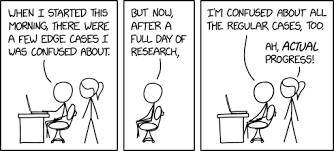
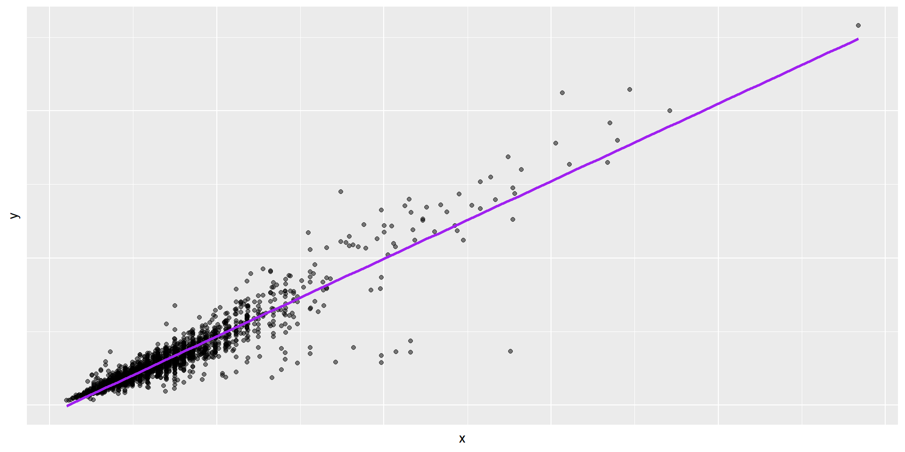
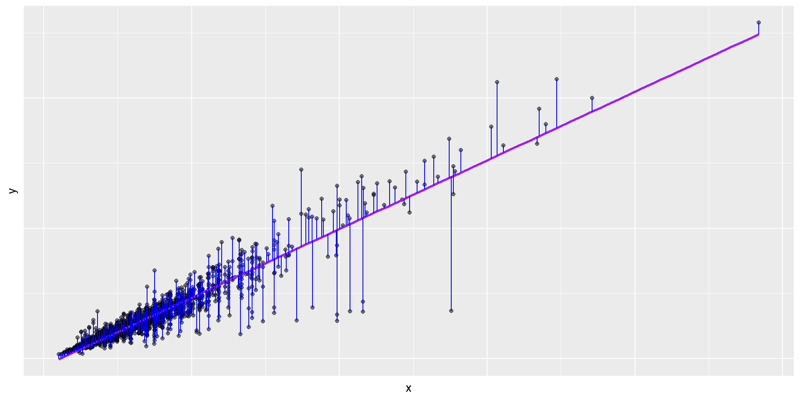
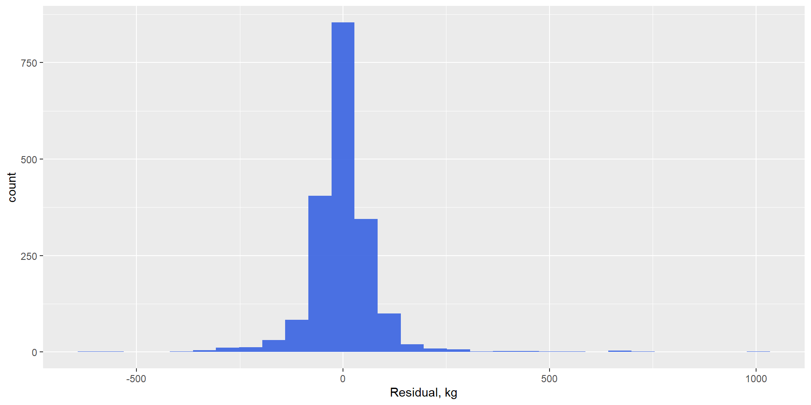
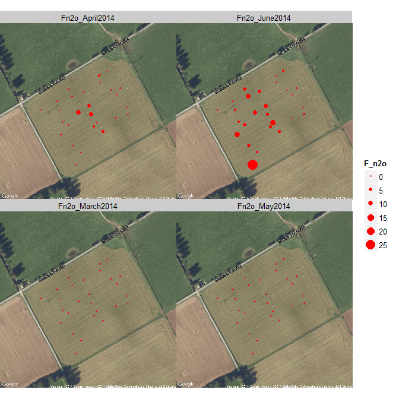
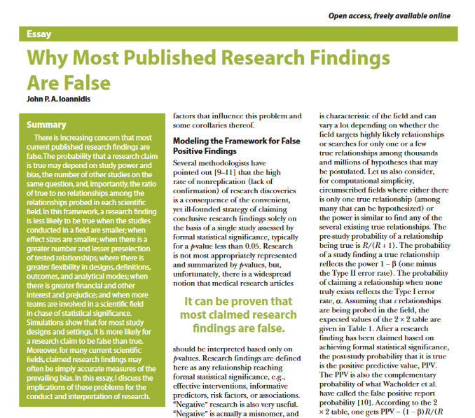

Data, Models & Probability Theory
2024-01-29

The core of the scientific process involves:
Inference is the process of estimating models, parameters, and their uncertainties, using data
“Likelihood” and “probability” used interchangeably in common speech.
Likelihood has a specific meaning in statistics:
We want to predict one thing (y) on the basis of another (x)
A function that describes a linear relationship between the response, \(y\), and the predictor, \(x\).
\[\begin{aligned} y &= \color{black}{\textbf{Model}} + \text{Error} \\[6pt] &= \color{black}{\mathbf{f(\theta, x)}} + \epsilon \\[6pt] &= \mathrm{intercept} + \mathrm{slope} \cdot x + \epsilon \\[6pt] &= \alpha + \beta x + \epsilon \\[6pt] \theta &= (\alpha, \beta) \\[6pt] \end{aligned}\]
A function that describes a linear relationship between the response, \(y\), and the predictor, \(x\).
\[\begin{aligned} y &= \color{black}{\textbf{Model}} + \text{Error} \\[6pt] &= \color{black}{\mathbf{f(\theta, x)}} + \epsilon \\[6pt] &= \mathrm{intercept} + \mathrm{slope} \cdot x + \epsilon \\[6pt] &= \beta_0 + \beta_1 x + \epsilon \\[6pt] \theta &= (\beta_0, \beta_1) \\[6pt] \end{aligned}\]
\[ \begin{aligned} y &= \color{purple}{\textbf{Model}} + \text{Error} \\[8pt] &= \color{purple}{\mathbf{f(\theta, x)}} + \epsilon \\[8pt] &= \color{purple}{\alpha + \beta x} + \epsilon \\[8pt] \end{aligned} \]

\[\begin{aligned} y &= \color{purple}{\textbf{Model}} + \color{blue}{\textbf{Error}} \\[8pt] &= \color{purple}{\mathbf{f(\theta, x)}} + \color{blue}{\boldsymbol{\epsilon}} \\[8pt] &= \color{purple}{\alpha + \beta x} + \color{blue}{\boldsymbol{\epsilon}} \\[8pt] \end{aligned}\]

\[\begin{aligned} y &= \color{purple}{\textbf{Model}} + \color{blue}{\textbf{Error}} \\[8pt] &= \color{purple}{\mathbf{f(\theta, x)}} + \color{blue}{\boldsymbol{\epsilon}} \\[8pt] &= \color{purple}{\alpha + \beta x} + \color{blue}{\boldsymbol{\epsilon}} \\[8pt] \end{aligned}\]

Regression slopes \(\beta\) are often referred to as effects
When the assumptions are not met …
All the same thing, increasing uncertainty.
Measurements are a proxy for true process of interest. Connection between the two can be:
Measurements are a proxy for true process of interest. Connection between the two can be:
The stream flow rate \(Q\) is the product of the stream cross-sectional area and its velocity. A pressure transducer continuously records stream height \(h\) via the pressure, \(P_{\mathrm{stream}}\).
We have a series of four linear models:
\[\begin{align*} Q_{flow} =& \beta_1 + \beta_2 h_{stream} + \epsilon_1 \\ h_{stream} =& \beta_3 + \beta_4 P_{sensor} + \epsilon_2 \\ P_{sensor} =& \beta_5 + \beta_6 V_{sensor} + \epsilon_3 \\ V_{sensor} =& \beta_7 + \beta_8 V_{logger} + \epsilon_4 \end{align*}\]
We effectively assume these models are perfect and the error terms \(\epsilon\) 1-4 are zero.
This is a relatively simple case, and some of these errors may well be negligible. Many cases are not so simple.
We can substitute one model in another:
\[\begin{align*} \label{eq:strr} Q_{flow} =& \beta_1 + \beta_2 (\beta_3 + \beta_4 P_{sensor} + \epsilon_2) + \epsilon_1 \\ P_{sensor} =& \beta_5 + \beta_6 V_{sensor} + \epsilon_3 \\ V_{sensor} =& \beta_7 + \beta_8 V_{logger} + \epsilon_4 \end{align*}\]
to give a single model:
\[\begin{align*} \label{eq:stream3} Q_{flow} = \beta_1 +& \beta_2 (\beta_3 + \beta_4 (\beta_5 + \beta_6 (\beta_7 + \beta_8 V_{logger} \\ +& \epsilon_4) + \epsilon_3) + \epsilon_2) + \epsilon_1 \end{align*}\]
Measurements are a proxy for true process of interest. Connection between the two can be:
Often, true process of interest is a larger-scale property (e.g. annual sum, regional mean)

But uncertainty often not propagated. Leads to results with:
But uncertainty often not propagated. Leads to results with:
But uncertainty often not propagated. Leads to:

High “false discovery rates”, often much higher than 5 %.
In ecology, these stem from: